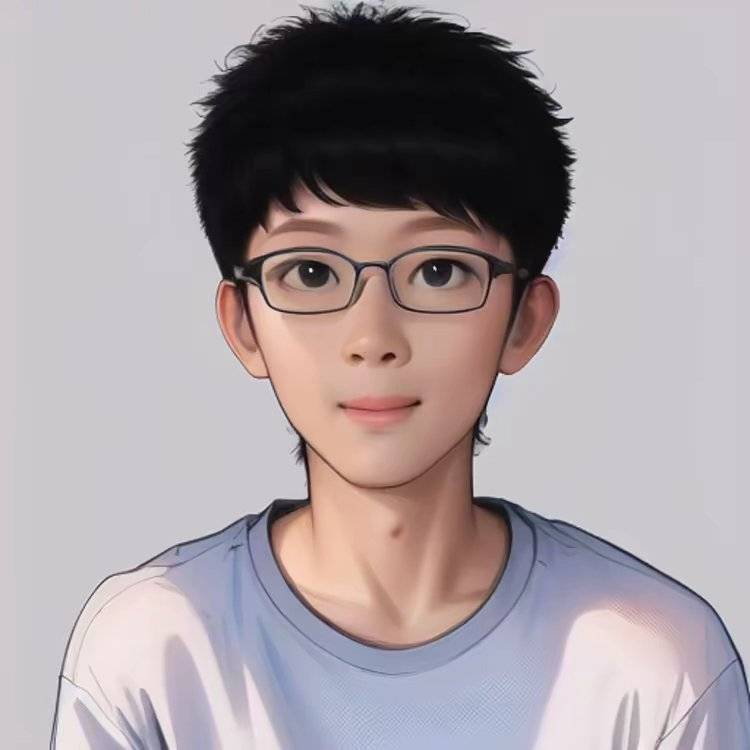

Mengtian Li (李梦天)Algorithm Engineer in Generative AIByteDance, Beijing, China Email: lemonsky1995@gmail.com |
 |
I am currently an algorithm engineer in Intelligent Creation at ByteDance, focusing on image/video generation. From July 2020 to January 2024, I served as an algorithm engineer in the Graphics AI team at Kuaishou, where I developed some amazing special effects based on Diffusion, GAN and traditional image processing, and meanwhile participated in a rendering engine project for virtual human. From June 2019 to September 2019, I was an intern in Interactive Entertainment Social (IES) at ByteDance. I got my M.Sc. degree from Nanjing University in 2020, supervised by Jie Guo. Previously, I received my B.Sc. degree from China University of Mining and Technology in 2017.